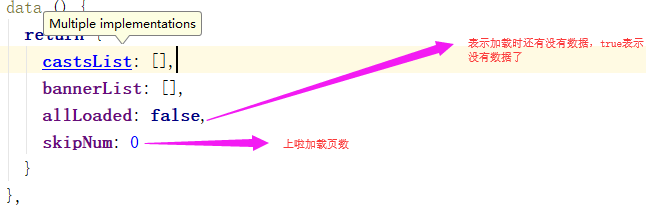

移动端：
一、安装
cnpm i mint-ui -S
cnpm i babel-preset-es2015 -S
cnpm i babel-plugin-component -D
二、改造根目录下的.babelrc文件
{
"presets": [
["es2015", { "modules": false }],
["env", {
"modules": false,
"targets": {
"browsers": ["> 1%", "last 2 versions", "not ie <= 8"]
}
}],
"stage-2"
],
"plugins": ["transform-vue-jsx", "transform-runtime",["component", [
{
"libraryName": "mint-ui",
"style": true
}
]]],
"env": {
"test": {
"presets": ["env", "stage-2"],
"plugins": ["transform-vue-jsx", "transform-es2015-modules-commonjs", "dynamic-import-node"]
}
}
}
三、使用组件---轮播 --- home/index.vue+script.js
import Vue from 'vue'
import { Swipe, SwipeItem } from 'mint-ui'
Vue.use(Swipe)
Vue.use(SwipeItem)
<mt-swipe :auto="4000">
<mt-swipe-item>1</mt-swipe-item>
<mt-swipe-item>2</mt-swipe-item>
<mt-swipe-item>3</mt-swipe-item>
</mt-swipe>
如果你觉得代码验证很麻烦，那么你可以将build/webpack.base.conf.js中的43行注释掉
下拉刷新与上拉加载
1、在main.js中引入mint-ui，并调用
2、在.babelrc文件中配置mint-ui
3、在home/index.vue文件中，使用mt-loadmore组件包裹banner图和list列表
<mt-loadmore bottomPullText="上拉加载" bottomDropText="释放加载" :top-method="loadTop" :bottom-method="loadBottom" :bottom-all-loaded="allLoaded" ref="loadmore">
...
</mt-loadmore>
此时不要去查看效果，因为不行，需要实现loadTop、loadBottom方法以及allLoaded属性
4、实现allLoaded属性--script.js

5、实现loadTop方法

6、实现loadBottom方法